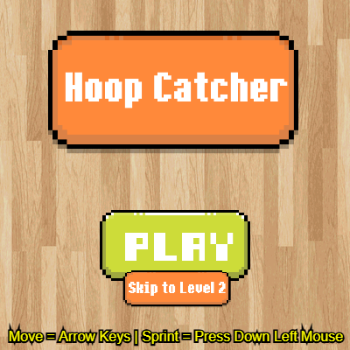
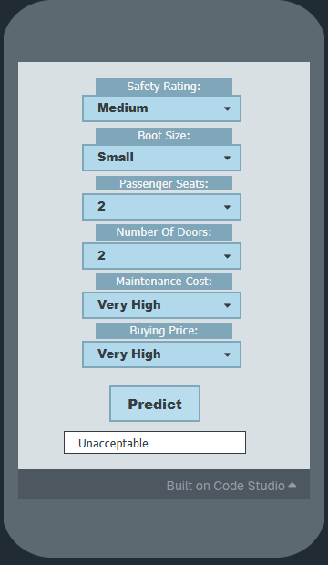
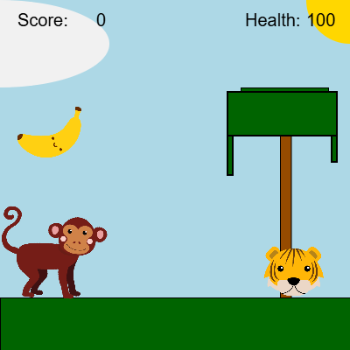
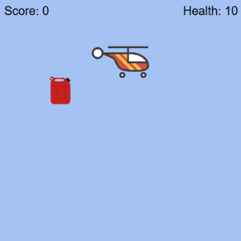
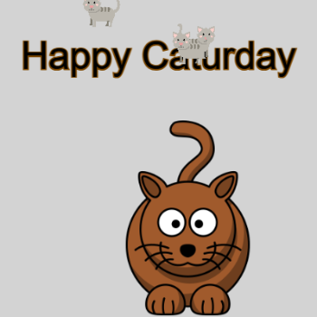
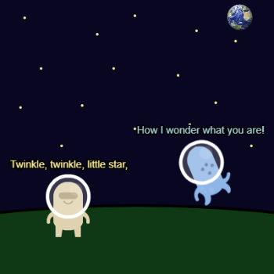

Projects
These projects gave me practice with JavaScript, game design, web development, and the basics of machine learning.
Project Highlights

Project - Design A Game
This project was the biggest game I created and involved many sprites with lots of interactivity, along with scoring and movement. The game features the player as a hoop to catch falling balls in a hoop with steadily increasing difficulty (levels). I learned how different systems combine together, including movement, object behavior, score tracking, and balancing different elements, helping me to understand the game design process.
Check out the project
Project - Make A Machine Learning App
I learned how a trained model can use data to make a prediction, and how the information it receives affects its result. This app considers a car’s safety rating, boot size, passenger seats, number of doors, maintenance cost, and buying price when estimating its acceptability.
Check out the project
Mini-Project - Side-Scroller Game
I learned how setting sprite speeds and tracking health and score affect how a game plays. Here, the monkey is the player, while a moving tiger obstacle and banana target cross the screen.
Check out the project
Mini-Project Flyer Game
I learned how to use keyboard checks to change the helicopter’s movement, reset various sprites properties after they leave the screen, handle various interactions between sprites, and track health and score with variables. The game uses these parts while the helicopter avoids missiles and collects fuel to stay afloat.
Check out the project
Project - Interactive Card
I learned how JavaScript can check for mouse and keyboard input and then update sprites. When the pointer is over the large cat, it moves to a new position; holding the spacebar makes the various smaller cat sprites move faster.
Check out the project
Project - Captioned Scenes / Animated Scenes
I learned how how small details can add animation and life to a scene. The original scene has two aliens, Earth, stars, and short lines of text; the later animated version adds movement and rotation. It also taught me about how non-static graphics work on the screen.
Check out the original projectCheck out the animated version